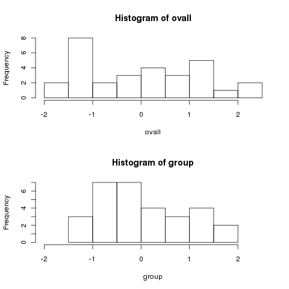
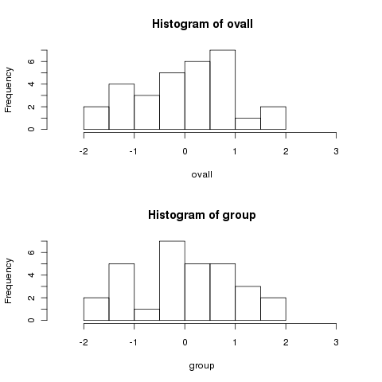
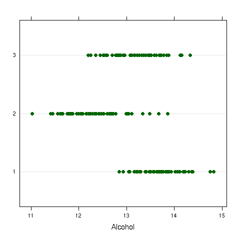
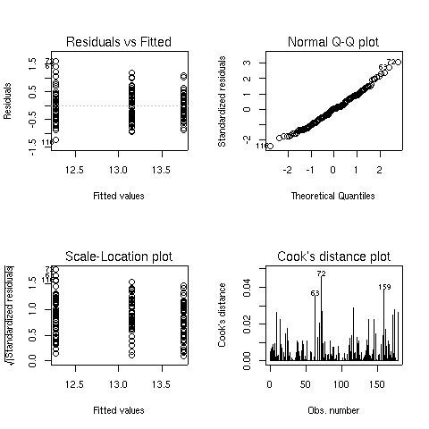

Analysis of Variance
1 Analysis of Variance
In its simplest form, analysis of variance (often abbreviated as ANOVA), can be
thought of as a generalization of the t-test, because it allows us to test the
hypothesis that the means of a dependent variable are the same for several groups,
not just two as would be the case when using a t-test. This type of ANOVA is
known as a one-way ANOVA.
In cases where there are multiple classification variables, more complex ANOVAs
are possible. For example, suppose we have data on test scores for students from
four schools, where three different teaching methods were used. This would
describe a two-way ANOVA. In addition to asking whether the means for the
different schools were different from each other, and whether the means for the
different teaching methods were different from each other, we could also
investigate whether the differences in teaching methods were different depending
on which school we looked at. This last comparison is known as an interaction,
and testing for interactions is one of the most important uses of analysis of
variance.
Before getting to the specifics of ANOVA, it may be useful to ask why we
perform an analysis of variance if our interest lies in the differences between
means.
If we were to concentrate on the differences between the means, we would have
many different comparisons to make, and the number of comparisons would increase
as we increased the number of groups we considered. Thus, we'd need different
tests depending on how many groups we were looking at. The reasoning behind
using variance to test for differences in means is based on the following idea:
Suppose we have several groups of data, and we calculate their variance in two
different ways. First, we put together all the data, and simply calculate its
variance disregarding the groups from which the data arose.
In other words, we evaluate the deviations of the data relative to overall mean
of the entire data set.
Next, we calculate
the variance by adding up the deviations around the mean of each of the groups.
The idea of analysis of variance is that if the two variance calculations give
us very similar results, then each of the group means must have been about the
same, because using the group means to measure variation didn't result in a big
change than from using the overall mean. But if the overall variance is bigger than
the variance calculated using the group means, then at least one of the group
means must have been different from the overall mean, so it's unlikely that the
means of all the groups were the same. Using this approach, we only need to
compare two values (the overall variance, and the variance calculated using each
of the group means) to test if any of the means are different, regardless of
how many groups we have.
To illustrate how looking at variances can tell us
about differences in means, consider a data set with
three groups, where the mean of the first group is
3, and the mean for the other groups is 1. We can
generate a sample as follows:
> mydf = data.frame(group=rep(1:3,rep(10,3)),x=rnorm(30,mean=c(rep(3,10),rep(1,20))))
Under the null hypothesis of no differences among the means,
we can center each set of data by the appropriate group mean,
and then compare the data to the same data centered by
the overall mean. In R, the ave function will return
a vector the same length as its' input, containing summary statistics
calculated by grouping variables. Since ave accepts an
unlimited number of grouping variables, we must identify the function
that calculates the statistic as the FUN= argument. Let's
look at two histograms of the data, first centered by the overall mean,
and then by the group means. Recall that under the null hypothesis,
there should be no difference.
> ovall = mydf$x - mean(mydf$x)
> group = mydf$x - ave(mydf$x,mydf$group,FUN=mean)
> par(mfrow=c(2,1))
> hist(ovall,xlim=c(-2,2.5))
> hist(group,xlim=c(-2,2.5))

Notice how much more spread out the data is when we centered by the
overall mean. To show that this isn't a trick, let's generate some
data for which the means are all equal:
> mydf1 = data.frame(group=rep(1:3,rep(10,3)),x=rnorm(30))
> ovall = mydf1$x - mean(mydf1$x)
> group = mydf1$x - ave(mydf1$x,mydf1$group,FUN=mean)
> par(mfrow=c(2,1))
> hist(ovall,xlim=c(-2.5,3.2))
> hist(group,xlim=c(-2.5,3.2))

Notice how the two histograms are very similar.
To formalize the idea of a one-way ANOVA, we have a data set with a dependent
variable and a grouping variable. We assume that the observations are
independent of each other, and the errors (that part of the data not explained
by an observation's group mean) follow a normal distribution with the same
variance for all the observations. The null hypothesis states that the means
of all the groups are equal, against an alternative that at least one of the means
differs from the others. We can test the null hypothesis by taking the ratio
of the variance calculated in the two ways described above, and comparing it to
an F distribution with appropriate degrees of freedom (more on that later).
In R, ANOVAs can be performed with the aov command. When you are
performing an ANOVA in R, it's very important that all of the grouping variables
involved in the ANOVA are converted to factors, or R will treat them as if they
were just independent variables in a linear regression.
As a first example, consider once again the wine data frame. The
Cultivar variable represents one of three different varieties of wine
that have been studied. As a quick preliminary test, we can examine a dotplot
of Alcohol versus Cultivar:

It does appear that there are some differences, even though there is overlap.
We can test for these differences with an ANOVA:
> wine.aov = aov(Alcohol~Cultivar,data=wine)
> wine.aov
Call:
aov(formula = Alcohol ~ Cultivar, data = wine)
Terms:
Cultivar Residuals
Sum of Squares 70.79485 45.85918
Deg. of Freedom 2 175
Residual standard error: 0.5119106
Estimated effects may be unbalanced
> summary(wine.aov)
Df Sum Sq Mean Sq F value Pr(>F)
Cultivar 2 70.795 35.397 135.08 < 2.2e-16 ***
Residuals 175 45.859 0.262
---
Signif. codes: 0 '***' 0.001 '**' 0.01 '*' 0.05 '.' 0.1 ' ' 1
The summary function displays the ANOVA table, which is similar
to that produced by most statistical software. It indicates that the
differences among the means are statistically significant. To see the
values for the means, we can use the aggregate function:
> aggregate(wine$Alcohol,wine['Cultivar'],mean)
Cultivar x
1 1 13.74475
2 2 12.27873
3 3 13.15375
The default plots from an aov object are the same as those for
an lm object. They're displayed below for the Alcohol/Cultivar ANOVA we just calculated:

2 Multiple Comparisons
In the previous example, notice that the test for Cultivar
is simply answering the question "Are there any significant differences
among the cultivars?". This is because the F-test which is used
to determine significant is based on the two different ways of
calculating the variance, not on any particular differences among
the means.
Having seen that there is a significant effect for Cultivar
in the previous example, a natural questions is "Which cultivars
are different from each other". One possibility would be to look
at all possible t-tests between the levels of the cultivar, i.e.
do t-tests for 1 vs. 2, 1 vs. 3, and 2 vs. 3. This is a very bad idea
for at least two reasons:
- One of the main goals of ANOVA is to combine together all our data,
so that we can more accurately estimate the residual variance of our
model. In the previous example, notice that there were 175 degrees
of freedom used to estimate the residual variance. Under the assumptions
of ANOVA, the variance of the dependent variable doesn't change across
the different levels of the independent variables, so we can (and should)
use the estimate from the ANOVA for all our tests. When we use a t-test,
we'll be estimating the residual variance only using the observations
for the two groups we're comparing, so we'll have fewer degrees of
freedom, and less power in determining differences.
-
When we're comparing several groups using t-tests, we have to look at
all possible combinations among the groups. This will sometimes result
in many tests, and we can no longer be confident that the probability
level we use for the individual tests will hold up across all of those
comparisons we're making. This is a well-known problem in statistics,
and many techniques have been developed to adjust probability values to
handle this case. However, these techniques tend to be quite conservative,
and they may prevent us from seeing differences that really exist.
To see how probabilities get adjusted when many comparisons are made,
consider a data set on the nitrogen levels in 5 varieties of clover.
We wish to test the hypothesis that the nitrogen level of the different
varieties of clover is the same.
> clover = read.table('http://www.stat.berkeley.edu/classes/s133/data/clover.txt',header=TRUE)
> clover.aov = aov(Nitrogen~Strain,data=clover)
> summary(clover.aov)
Df Sum Sq Mean Sq F value Pr(>F)
Strain 5 847.05 169.41 14.370 1.485e-06 ***
Residuals 24 282.93 11.79
---
Signif. codes: 0 ‘***’ 0.001 ‘**’ 0.01 ‘*’ 0.05 ‘.’ 0.1 ‘ ’ 1
Let's say that we want to look at all the possible t-tests
among pairs of the 6 strains. First, we can use the combn
function to show us all the possible 2-way combinations of the strains:
> combs = combn(as.character(unique(clover$Strain)),2)
> combs
[,1] [,2] [,3] [,4] [,5] [,6] [,7] [,8]
[1,] "3DOK1" "3DOK1" "3DOK1" "3DOK1" "3DOK1" "3DOK5" "3DOK5" "3DOK5"
[2,] "3DOK5" "3DOK4" "3DOK7" "3DOK13" "COMPOS" "3DOK4" "3DOK7" "3DOK13"
[,9] [,10] [,11] [,12] [,13] [,14] [,15]
[1,] "3DOK5" "3DOK4" "3DOK4" "3DOK4" "3DOK7" "3DOK7" "3DOK13"
[2,] "COMPOS" "3DOK7" "3DOK13" "COMPOS" "3DOK13" "COMPOS" "COMPOS"
Let's focus on the first column:
> x = combs[,1]
> tt = t.test(Nitrogen~Strain,data=clover)
> names(tt)
[1] "statistic" "parameter" "p.value" "conf.int" "estimate"
[6] "null.value" "alternative" "method" "data.name"
This suggests a function which would return the probability
for each combination of strains:
> gettprob = function(x)t.test(Nitrogen~Strain,data=clover[clover$Strain %in% x,])$p.value
We can get the probabilities for all the tests, and combine them with
the country names for display:
> probs = data.frame(t(combs),probs=apply(combs,2,gettprob))
> probs
X1 X2 probs
1 3DOK1 3DOK5 1.626608e-01
2 3DOK1 3DOK4 2.732478e-03
3 3DOK1 3DOK7 2.511696e-02
4 3DOK1 3DOK13 3.016445e-03
5 3DOK1 COMPOS 1.528480e-02
6 3DOK5 3DOK4 5.794178e-03
7 3DOK5 3DOK7 7.276336e-02
8 3DOK5 3DOK13 1.785048e-03
9 3DOK5 COMPOS 3.177169e-02
10 3DOK4 3DOK7 4.331464e-02
11 3DOK4 3DOK13 5.107291e-01
12 3DOK4 COMPOS 9.298460e-02
13 3DOK7 3DOK13 4.996374e-05
14 3DOK7 COMPOS 2.055216e-01
15 3DOK13 COMPOS 4.932466e-04
These probabilities are for the individual t-tests, each with
an alpha level of 0.05, but that doesn't guarantee that the experiment-wise
alpha will be .05. We can use the p.adjust function to adjust
these probabilities:
> probs = data.frame(probs,adj.prob=p.adjust(probs$probs,method='bonferroni'))
> probs
X1 X2 probs adj.prob
1 3DOK1 3DOK5 1.626608e-01 1.000000000
2 3DOK1 3DOK4 2.732478e-03 0.040987172
3 3DOK1 3DOK7 2.511696e-02 0.376754330
4 3DOK1 3DOK13 3.016445e-03 0.045246679
5 3DOK1 COMPOS 1.528480e-02 0.229272031
6 3DOK5 3DOK4 5.794178e-03 0.086912663
7 3DOK5 3DOK7 7.276336e-02 1.000000000
8 3DOK5 3DOK13 1.785048e-03 0.026775721
9 3DOK5 COMPOS 3.177169e-02 0.476575396
10 3DOK4 3DOK7 4.331464e-02 0.649719553
11 3DOK4 3DOK13 5.107291e-01 1.000000000
12 3DOK4 COMPOS 9.298460e-02 1.000000000
13 3DOK7 3DOK13 4.996374e-05 0.000749456
14 3DOK7 COMPOS 2.055216e-01 1.000000000
15 3DOK13 COMPOS 4.932466e-04 0.007398699
Notice that many of the comparisons that seemed significant when
using the t-test are no longer significant. Plus, we didn't take
advantage of the increased degrees of freedom. One technique that
uses all the degrees of freedom of the combined test, while still
correcting for the problem of multiple comparisons is known as
Tukey's Honestly Significant Difference (HSD) test. The TukeyHSD
function takes a model object and the name of a factor, and provides
protected probability values for all the two-way comparisons of factor
levels. Here's the output of TukeyHSD for the clover data:
> tclover = TukeyHSD(clover.aov,'Strain')
> tclover
Tukey multiple comparisons of means
95% family-wise confidence level
Fit: aov(formula = Nitrogen ~ Strain, data = clover)
$Strain
diff lwr upr p adj
3DOK13-3DOK1 -15.56 -22.27416704 -8.845833 0.0000029
3DOK4-3DOK1 -14.18 -20.89416704 -7.465833 0.0000128
3DOK5-3DOK1 -4.84 -11.55416704 1.874167 0.2617111
3DOK7-3DOK1 -8.90 -15.61416704 -2.185833 0.0048849
COMPOS-3DOK1 -10.12 -16.83416704 -3.405833 0.0012341
3DOK4-3DOK13 1.38 -5.33416704 8.094167 0.9870716
3DOK5-3DOK13 10.72 4.00583296 17.434167 0.0006233
3DOK7-3DOK13 6.66 -0.05416704 13.374167 0.0527514
COMPOS-3DOK13 5.44 -1.27416704 12.154167 0.1621550
3DOK5-3DOK4 9.34 2.62583296 16.054167 0.0029837
3DOK7-3DOK4 5.28 -1.43416704 11.994167 0.1852490
COMPOS-3DOK4 4.06 -2.65416704 10.774167 0.4434643
3DOK7-3DOK5 -4.06 -10.77416704 2.654167 0.4434643
COMPOS-3DOK5 -5.28 -11.99416704 1.434167 0.1852490
COMPOS-3DOK7 -1.22 -7.93416704 5.494167 0.9926132
> class(tclover)
[1] "multicomp" "TukeyHSD"
> names(tclover)
[1] "Strain"
> class(tclover$Strain)
[1] "matrix"
These probabilities seem more reasonable. To combine these
results with the previous ones, notice that tclover$Strain
is a matrix, with row names indicating the comparisons being made.
We can put similar row names on our earlier results and then merge
them:
> row.names(probs) = paste(probs$X2,probs$X1,sep='-')
> probs = merge(probs,tclover$Strain[,'p adj',drop=FALSE],by=0)
> probs
Row.names X1 X2 probs adj.prob p adj
1 3DOK13-3DOK1 3DOK1 3DOK13 0.0030164452 0.045246679 2.888133e-06
2 3DOK4-3DOK1 3DOK1 3DOK4 0.0027324782 0.040987172 1.278706e-05
3 3DOK5-3DOK1 3DOK1 3DOK5 0.1626608271 1.000000000 2.617111e-01
4 3DOK7-3DOK1 3DOK1 3DOK7 0.0251169553 0.376754330 4.884864e-03
5 3DOK7-3DOK4 3DOK4 3DOK7 0.0433146369 0.649719553 1.852490e-01
6 3DOK7-3DOK5 3DOK5 3DOK7 0.0727633570 1.000000000 4.434643e-01
7 COMPOS-3DOK1 3DOK1 COMPOS 0.0152848021 0.229272031 1.234071e-03
8 COMPOS-3DOK13 3DOK13 COMPOS 0.0004932466 0.007398699 1.621550e-01
9 COMPOS-3DOK4 3DOK4 COMPOS 0.0929845957 1.000000000 4.434643e-01
10 COMPOS-3DOK5 3DOK5 COMPOS 0.0317716931 0.476575396 1.852490e-01
11 COMPOS-3DOK7 3DOK7 COMPOS 0.2055215679 1.000000000 9.926132e-01
Finally, we can display the probabilities without scientific
notation as follows:
> format(probs,scientific=FALSE)
Row.names X1 X2 probs adj.prob p adj
1 3DOK13-3DOK1 3DOK1 3DOK13 0.0030164452 0.045246679 0.000002888133
2 3DOK4-3DOK1 3DOK1 3DOK4 0.0027324782 0.040987172 0.000012787061
3 3DOK5-3DOK1 3DOK1 3DOK5 0.1626608271 1.000000000 0.261711120046
4 3DOK7-3DOK1 3DOK1 3DOK7 0.0251169553 0.376754330 0.004884863746
5 3DOK7-3DOK4 3DOK4 3DOK7 0.0433146369 0.649719553 0.185248969392
6 3DOK7-3DOK5 3DOK5 3DOK7 0.0727633570 1.000000000 0.443464260597
7 COMPOS-3DOK1 3DOK1 COMPOS 0.0152848021 0.229272031 0.001234070633
8 COMPOS-3DOK13 3DOK13 COMPOS 0.0004932466 0.007398699 0.162154993324
9 COMPOS-3DOK4 3DOK4 COMPOS 0.0929845957 1.000000000 0.443464260597
10 COMPOS-3DOK5 3DOK5 COMPOS 0.0317716931 0.476575396 0.185248969392
11 COMPOS-3DOK7 3DOK7 COMPOS 0.2055215679 1.000000000 0.992613208547
By using all of the data to estimate the residual error,
Tukey's HSD method actually reports some of the probabilities as
even lower than the t-tests.
File translated from
TEX
by
TTH,
version 3.67.
On 25 Apr 2011, 15:23.